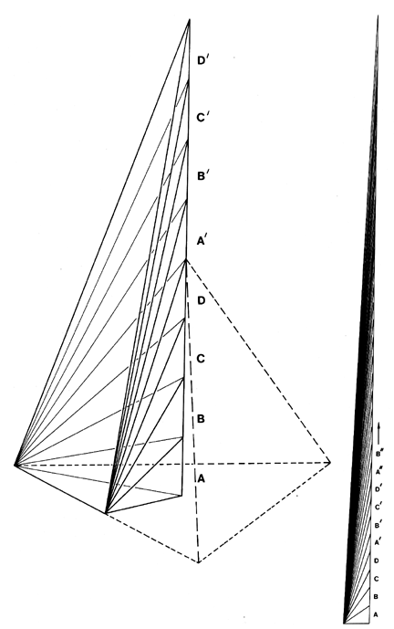

Fig. 986.726 Constant-unit-volume Progressions of Asymmetric Tetrahedra: In this progression of ever- more-asymmetric tetrahedra, only the sixth edge remains constant. Tetrahedral wavelength and tuning permits any two point in Universe.
Copyright © 1997 Estate of R. Buckminster Fuller